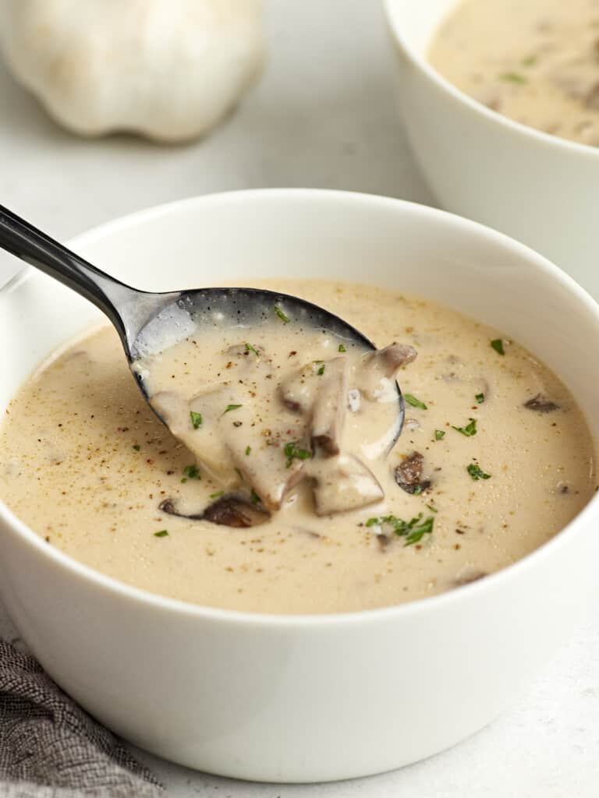

Cream of mushroom soup

You will not regret preparing this delicious dish!
Cream of mushroom soup is a simple type of soup where a basic roux is thinned
with cream or milk and then mushrooms or mushroom broth are added.
Ingredients
mushrooms (yes, really)
herbs
cream
flour
Steps
Heat a large soup pot over medium heat
Sauté your aromatic vegetables (onion, garlic, celery, carrot) in your fat
Add sliced mushrooms and salt.
Cook them until they turn soft, stir frequently in between
When almost water is evaporated, remove 2-3 tablespoon mushroom and keep aside
Stir and cook for a minute
Add water
Turn off flame and add preserved cooked mushroom (in step-4) and fresh cream